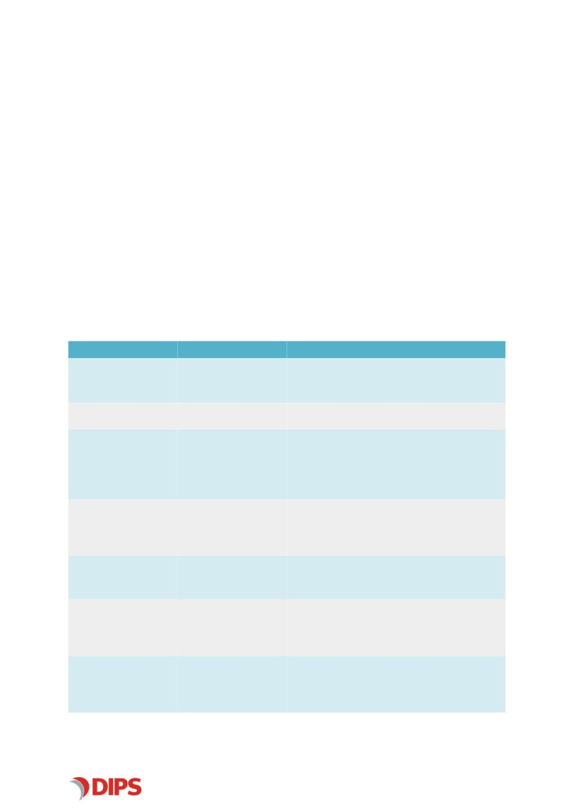
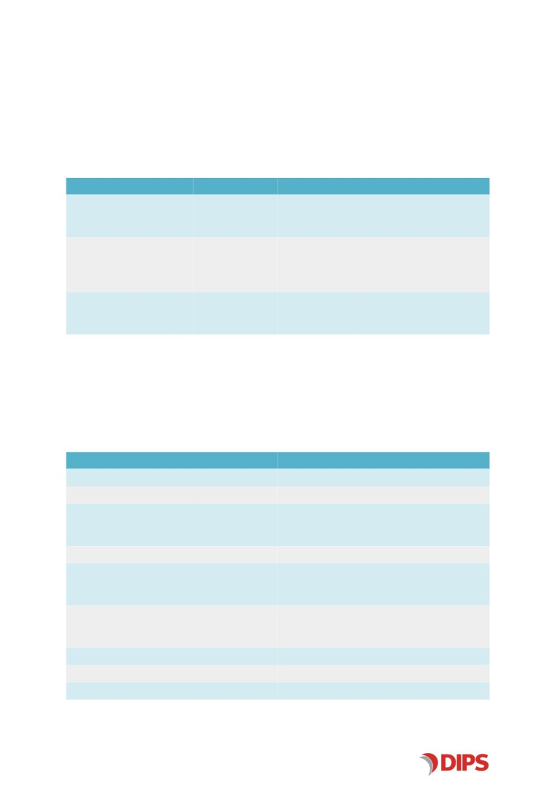
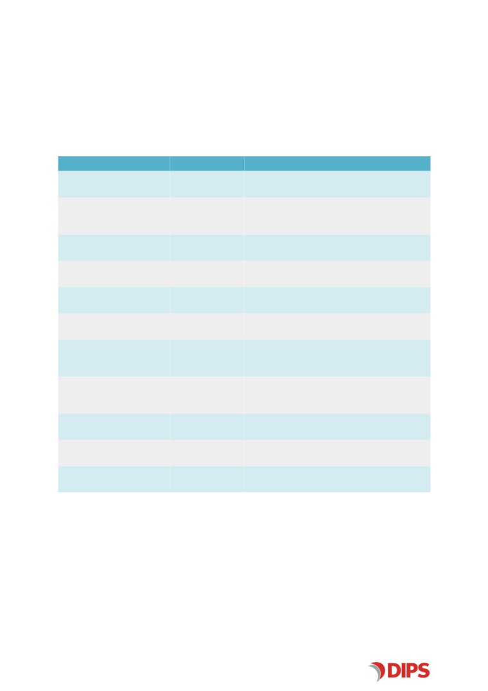
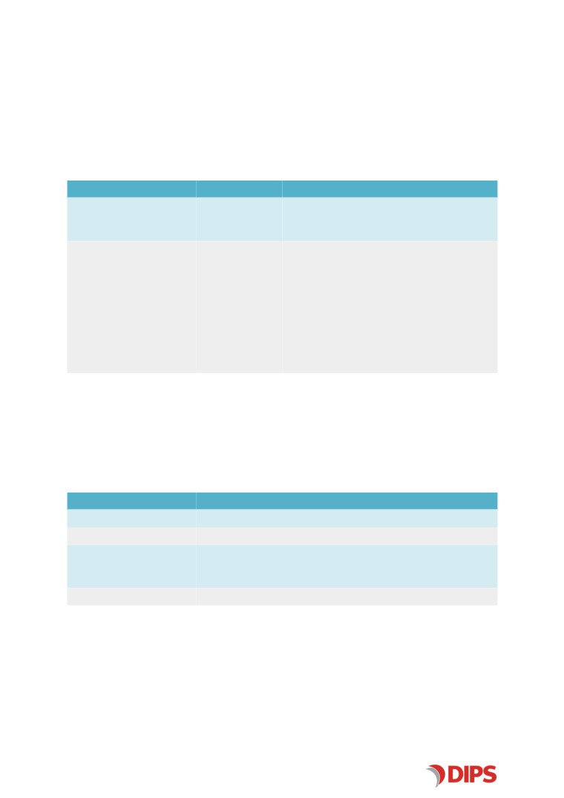
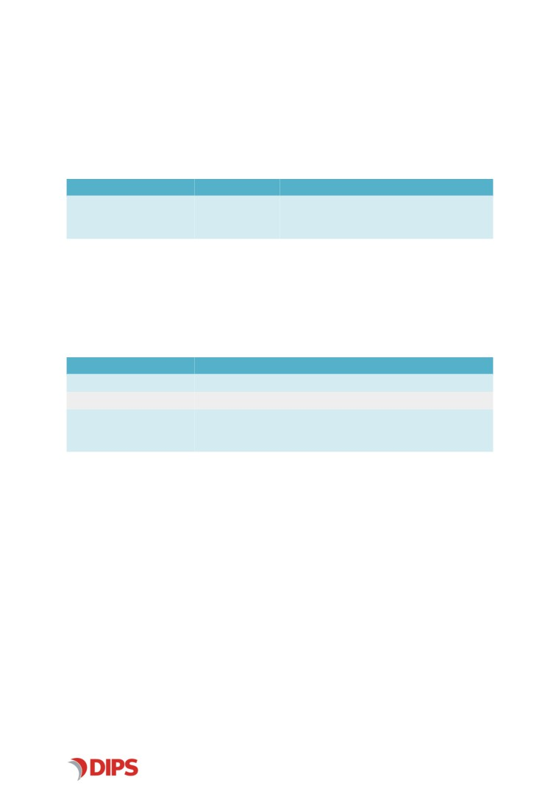
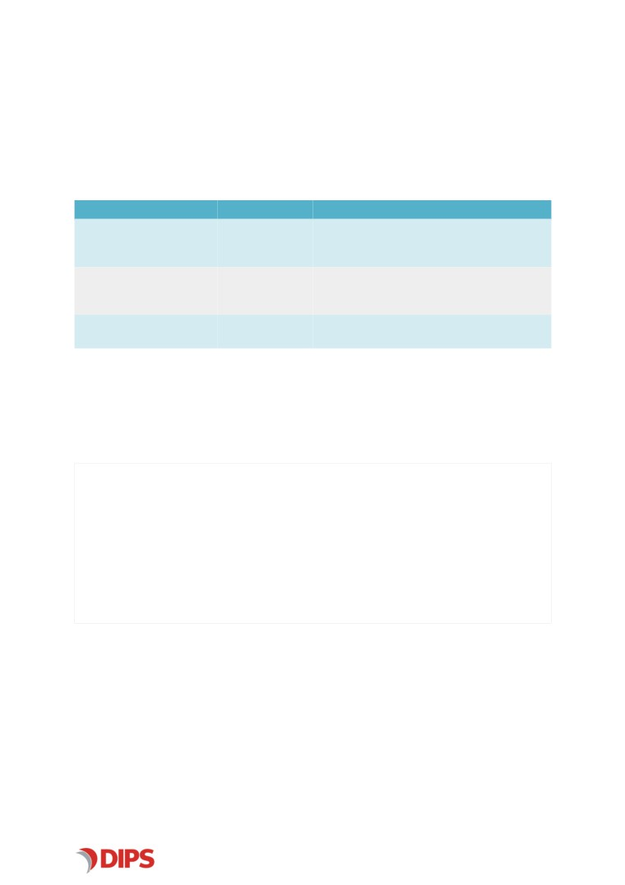

DIPS FHIR R4
Admin Documentation
DIPS AS
Version 1.0.0, 2020-12-09
Contents
1. Introduction
2
2. Logging Configuration
2
3. Federated Security in DIPS FHIR R4
4
3.1. What is Federated Security?
4
3.2. Enabling Federated Security in DIPS FHIR R4
5
3.3. Federated Security in action
5
3.4. Configuring Federated Security in DIPS FHIR R4
6
3.4.1. Authenticating DIPS FHIR R4 to DIPS Federation Server using Client Certificate
7
4. FHIR Appointment
8
4.1. Configuration in appsettings.json
8
5. FHIR Binary
9
5.1. Configuration in appsettings.json
9
6. FHIR Condition
10
6.1. Configuration in appsettings.json
10
7. FHIR CriticalInformation
11
7.1. Configuration in appsettings.json
11
7.2. Configuration for FhirCriticalInfoServer
11
7.2.1. web.config file appSettings parameters
11
8. FHIR DiagnosisReport
12
8.1. Configuration in appsettings.json
12
9. FHIR Document
13
9.1. Configuration in appsettings.json
13
10. FHIR Encounter
14
10.1. Configuration in appsettings.json
14
11. FHIR Organization/Location
15
11.1. Configuration in appsettings.json
15
11.2. Configuration for OrganizationalUnits Server
15
11.2.1. web.config parameters
15
12. FHIR Patient
16
12.1. Configuration in appsettings.json
16
12.2. Configuration for ServiceBrokerCare
16
12.2.1. web.config file appSettings parameters
16
13. FHIR Practitioner
17
13.1. Configuration in appsettings.json
17
13.2. Configuration for HealthCarePartyWcfServer
17
13.2.1. web.config parameters
17
14. FHIR Procedure
18
14.1. Configuration in appSettings.json
18
14.2. Mapping internal procedure systems
18
15. FHIR ValueSet
19
15.1. Configuration in appsettings.json
19
DIPS FHIR R4 | Admin Documentation
Revision History
Date
Revision Author
Description
2020-11-25
1.0.0
Kugathasan Shanjeeva
Release version 1.0.0
Approval History
Date
Revision Approved by
Role
2020-12-09
1.0.0
Lars-Andreas Nystad
Product Owner
1
E N A B L I N G E F F I C I E N T H E A L T H C A R E
DIPS FHIR R4 | Admin Documentation
1. Introduction
This document mainly describe about the configuration and settings. The intended audience for this
document is programmers, system integrators and other personnel handling the server-side
installation.
2. Logging Configuration
configurable logging framework which supports changes in logging configuration runtime, avoiding the
need to restart the application or make changes in the application source code.
The application logging configuration is located in a separate file, log4net.config. Even if its values are
modified during installation, it may also be modified manually at a later time. Changes to this file does
not reload the application’s application pool since it is located in a separate file, which the log4net
framework monitors for changes during runtime.
Example: log4.net.config
E N A B L I N G E F F I C I E N T H E A L T H C A R E
2
DIPS FHIR R4 | Admin Documentation
<log4net>
<appender name="MainAppender" type="log4net.Appender.RollingFileAppender">
<file value=".\dips-log\DIPS-FHIR-R4-Core-Main.log" />
<datePattern value=".yyMMdd.'log'" />
<maximumFileSize value="10MB" />
<maxSizeRollBackups value="-1" />
<layout type="log4net.Layout.PatternLayout">
<conversionPattern value="%utcdate{yyyyMMdd
HH:mm:ss,fff};%level;57;%property{sessionid};%property{profilingCallId};%thread;%logger;%message%
property{FULLCONTEXT}%newline%exception" />
</layout>
</appender>
<appender name="ProfilingAppender" type="log4net.Appender.RollingFileAppender">
<file value=".\DIPS-Log\DIPS-FHIR-R4-Core-Profiling.log" />
<appendToFile value="true" />
<rollingStyle value="Date" />
<datePattern value=".yyMMdd.'log'" />
<MaximumFileSize value="500MB" />
<layout type="log4net.Layout.PatternLayout">
<conversionPattern value="%message%newline" />
</layout>
</appender>
<root>
<level value="error" />
<appender-ref ref="MainAppender" />
</root>
<logger name="DIPS" >
<level value="INFO"/>
</logger>
<logger name="Profiling" additivity="false" >
<level value="trace"/>
<appender-ref ref="ProfilingAppender"/>
</logger>
</log4net>
3
E N A B L I N G E F F I C I E N T H E A L T H C A R E
DIPS FHIR R4 | Admin Documentation
3. Federated Security in DIPS FHIR R4
This version of DIPS FHIR R4 supports federated security.
3.1. What is Federated Security?
With federated security, the identity of callers is asserted by an external, security token service (aka
"STS") which issues security tokens (aka "Issuer").
Services which rely on federated security (AKA "Relying Parties", or "RP") require a security token to be
carried along with each request. This security token is the assertion from the STS concerning the
current user which is making the request. The security token is digitally signed, and the signature is
carried in the token. This ensures that the token cannot be altered without detection.
A trust relationship between the RP and the STS has been established in advance, so the RP trusts that
the information received from the STS is valid. This frees the RP from authenticating users, as this has
already been performed by the STS.
A STS can act as an identity provider (IDP) that specializes in authenticates end users or as intermediate
federation gateway that accepts certain tokens from other STSs and issues new tokens ("token
exchange").
Examples of STSs are:
• Microsoft Active Directory Federation Services (ADFS)
• Ping Federate ("Ping")
• DIPS Federation Server
As mentioned above, federated security involves a security token issued by an external STS (also
known as authorization server). When DIPS FHIR R4 receives such a token with a request, further
processing of it is delegated to DIPS Federation Server:
1. A request is received by DIPS FHIR R4, which contains an access token.
2. DIPS FHIR R4 forwards the access token to DIPS Federation Server.
3. DIPS Federation Server validates the access token (digital signature, validity times, known issuer
etc).
4. Based on the access token, DIPS Federation Server extracts information about the user ID based
on attributes (claims) in token.
5. The user ID is attempted mapped to a DIPS user.
6. Information about the user role to which the user is signed in to, is extracted from the access
token and is attempted mapped to a user role on the located DIPS user.
7. A user session for the user role is created in the DIPS database. Such a user session is identified
with a DIPS ticket.
8. DIPS Federation Server creates a new access token (JWT) for internal use by DIPS services with
some new attributes::
E N A B L I N G E F F I C I E N T H E A L T H C A R E
4
DIPS FHIR R4 | Admin Documentation
◦ The resolved DIPS user
◦ The resolved DIPS user role and its relevant properties (name, ID, expiration date etc)
◦ The DIPS ticket which identifies the database session for the user role.
9. The access token is signed by DIPS Federation Server’s own signing certificate.
10. The access token is returned to DIPS FHIR R4, and is now known as the DIPS Access Token.
11. A trust relationship exists between DIPS FHIR R4 and DIPS Federation Server, so as long as the
digital signature is verified and the standard validity checks are made, DIPS FHIR R4 accepts the
DIPS access token.
12. DIPS FHIR R4 uses the user, user role and ticket information in the DIPS token to authenticate
the user.
13. For DIPS FHIR R4, the process of token exchange has just occurred. The IDP token has been
validated and exchanged for a DIPS access token.
14. For the remainder of the request to DIPS FHIR R4, the identity of the request is set to the
identified DIPS user. The DIPS ticket is extracted and made available to downstream DIPS
services, as well as the DIPS database.
3.2. Enabling Federated Security in DIPS FHIR R4
When federated security is enabled, all other authentication methods (e.g. supplied
DIPS ticket or HTTP Basic authentication) are disabled.
DIPS FHIR R4 ships with a configuration parameter IdentityServer. If this parameter has a valid
URI as the value, DIPS FHIR R4 will enable federated security and the previously known authentication
(either requiring a DIPS ticket or handling its own authentication) is no longer available. All requests
MUST contain an OAuth 2.0 Bearer token, except a few predefined metadata endpoints.
When requests without Bearer tokens arrive for protected resources, the server will respond with 403
Forbidden.
DIPS FHIR R4 includes a database upgrade specific to federated security. It adds DIPS FHIR R4 as an
OAuth client, along with other required data to participate in the token exchange flow described
above.
3.3. Federated Security in action
When DIPS FHIR R4 receives a request after federated security is activated, the following steps take
place:
1. Check that the request contains an OAuth 2.0 Bearer token JWT access token.
2. If no such token is found, the request ends and a response with HTTP status code 403
Forbidden is returned.
3. The access token is sent to DIPS Federation Server for validation and token exchange. One
possible exception to this is if the token received is from DIPS Federation Server itself. For these
5
E N A B L I N G E F F I C I E N T H E A L T H C A R E

DIPS FHIR R4 | Admin Documentation
cases, the configuration can be altered to allow for "local" validation. Local validation downloads
and caches DIPS Federation Server metadata (certificate public key etc) for a small amount of
time, which provides semi-offline validation of received tokens.
4. If the request to DIPS Federation Server does not succeed, the request ends and a response
with HTTP status code 403 Forbidden is returned.
5. The signature of token returned from DIPS Federation Server is validated.
6. The identity represented by the token from DIPS Federation Server is extracted and set as the
identity of the request. Other relevant attributes, such as the DIPS ticket, are also made
available to downstream components which are called by DIPS FHIR R4 as part of the service
call.
3.4. Configuring Federated Security in DIPS FHIR R4
The federation part of DIPS FHIR R4 includes a database upgrade package which adds pre-configured
data to DIPS Federation Server. However, this is all configurable. The table below lists all federation
parameters available for configuration.
Table 1. Federation configuration parameters
Parameter
Default Value
Description
IdentityServer
The absolute URI to DIPS Federation Server. e.g.
This parameter must be an absolute URI.
FederationClientId
dips-fhir-r4-
Sets a different client ID than the default value.
token-exchange
FederationClientSecret
Overrides the default password. The combination
of client ID and client secret are passed to DIPS
Federation Server as client id:client
secret Base64 encoded, unless a client
certificate is configured (see below).
FederationClientCertifica
Sets the certificate search value for locating the
te
client certificate to use instead of HTTP Basic
authentication with a client secret. See the section
"Authenticating using Client Certificate" below.
FederationGrantType
urn:ietf:params:
The default value indicates to DIPS Federation
oauth:grant-
type:jwt-bearer
exchange follows the specification at RFC 7523 .
FederationTokenExchan
dips-fhir
Indicates the requested scope of the returned
geScopes
access token. Adds more scopes than the default.
Multiple scopes must be separated with a single
space (' ').
FederationRequiredScop
dips-fhir
Is used to specify any required scopes which must
es
be present in the original token returned from
DIPS Federation Server. Multiple scopes must be
separated with a single space (' ').
E N A B L I N G E F F I C I E N T H E A L T H C A R E
6
DIPS FHIR R4 | Admin Documentation
Parameter
Default Value
Description
FederationValidationMo Local
Specifies the validation mode of DIPS-issued
de
tokens. Valid values are Local,
ValidationEndpoint and Both.
3.4.1. Authenticating DIPS FHIR R4 to DIPS Federation Server using Client
Certificate
DIPS FHIR R4 can be configured to use a client certificate when authenticating itself against DIPS
Federation Server. To enable, add a value in the configuration parameter file with the name
FederationClientCertificate.
Based on this value, a certificate is attempted loaded from the server machine’s "Personal" certificate
store (PowerShell: cert:/localmachine/my).
The configured value will be used to look up the certificate by interpreting the value as different "X509
find values". The following interpretations are used, and the search will try to load the certificate by
the value, and will use the next in line if a certificate cannot be loaded:
• As the certificate’s subject
• As the certificate’s subject distinguished name
• As the certificate’s thumbprint.
If no certificates are found, client authentication will revert to Basic HTTP authentication.
In order for a certificate to be considered as a valid client certificate, it must fulfill at least the following
criteria:
• It must be stored with a private key.
• It must be considered valid by the certificate store: e.g. expiration dates, issuer certificate
chains etc.
Accepting (or requiring) client certificates at DIPS Federation Server is beyond the scope of this
document, but the certificate and its entire trust chain must also be known and accepted by the
computer running DIPS Federation Server.
7
E N A B L I N G E F F I C I E N T H E A L T H C A R E
DIPS FHIR R4 | Admin Documentation
4. FHIR Appointment
4.1. Configuration in appsettings.json
This section will describe the parameters found in [install directory]\FHIR-R4\appsettings.json file
Table 2. FHIR Appointment appsettings.json parameters
Parameter
Default value
Description
PatientBookingService:Url
URI for Arena patient booking WCF service.
PatientBookingServices-Service/DIPS-WcfService
EncounterService:Url
FHIR Encounter Service URL, Example:
ServiceBrokerCareService:Url
URI for ServiceBrokerCare WCF service. Example:
r/
E N A B L I N G E F F I C I E N T H E A L T H C A R E
8
DIPS FHIR R4 | Admin Documentation
5. FHIR Binary
5.1. Configuration in appsettings.json
This section will describe the parameters found in [install directory]\FHIR-R4\appsettings.json file
Table 3. FHIR Binary appsettings.json parameters
Parameter
Default value
Description
DocumentService:Url
URI for DIPS WCF service. Example:
9
E N A B L I N G E F F I C I E N T H E A L T H C A R E
DIPS FHIR R4 | Admin Documentation
6. FHIR Condition
6.1. Configuration in appsettings.json
This section will describe the parameters found in [install directory]\ FHIR-R4\appsettings.json file
Table 4. FHIR Condition appsettings parameters
Parameter
Default value
Description
ServiceBrokerCareService:Url
URI for ServiceBrokerCare WCF service. Example:
r/
TagDiagnoseAsExternal
false
Controls if stored diagnoses are tagged as
externally supplied.
AllowCancerDiagnosis
false
Specifies if cancer diagnoses are allowed
registered.
AllowInjuryDiagnosis
false
Specifies if injury diagnoses are allowed
registered.
E N A B L I N G E F F I C I E N T H E A L T H C A R E
10

DIPS FHIR R4 | Admin Documentation
7. FHIR CriticalInformation
7.1. Configuration in appsettings.json
This section will describe the parameters found in [install directory]\ FHIR-R4\appsettings.json file
Table 5. FHIR CriticalInformation appsettings parameters
Parameter
Default
Description
CriticalInfoService:Url
URL where the CriticalInfo service WCF backend
has been installed. Example:
ServiceBrokerCareService:Url
URL where the DrugReaction service WCF backend
has been installed. Example:
r/
HealthCarePartyService:Url
URL where the Patient service WCF backend has
been installed. Example:
7.2. Configuration for FhirCriticalInfoServer
FhirCriticalInfoServer is installed as a separate application in IIS on the same machine as the FHIR
server. It has its own web.config file.
7.2.1. web.config file appSettings parameters
Parameter
Value
Database.UserId
Database UserId. Default: crinfo_app
Database.Password
Password for the user specified in UserId
Database.DataSource
"(DESCRIPTION=(ADDRESS_LIST=(ADDRESS=(PROT
OCOL=TCP)(HOST=[server_url])(PORT=1521)))(CO
NNECT_DATA=(SERVER=DEDICATED)(SID=DIPS)))"
AuthorizationService.Url
[server_url]/dips-authorization-service/
ArenaCriticalinfoServiceUrl
/DIPS/DIPS-WcfService/DIPS-CriticalInformation-
Interface-Reading-
ICriticalInformationReaderService.svc
ArenaDrugReactionServiceUrl
/DIPS/DIPS-WcfService/DIPS-DrugReaction-
Interfaces-Reading-
IDrugReactionReaderService.svc
EnableArenaCriticalInfo
false
DrugReactionMapping.UseAtcRepository
false
ArenaServer
[server_url]
11
E N A B L I N G E F F I C I E N T H E A L T H C A R E
DIPS FHIR R4 | Admin Documentation
8. FHIR DiagnosisReport
8.1. Configuration in appsettings.json
This section will describe the parameters found in [install directory]\ FHIR-R4\appsettings.json file
Table 6. FHIR DiagnosisReport appsettings parameters
Parameter
Default value
Description
LabServiceService:Url
URI for Arena lab WCF service. Example:
ServiceBrokerCareService:Url
URI for ServiceBrokerCare WCF service. Example:
r/
E N A B L I N G E F F I C I E N T H E A L T H C A R E
12

DIPS FHIR R4 | Admin Documentation
9. FHIR Document
9.1. Configuration in appsettings.json
This section will describe the parameters found in [install directory]\FHIR-R4\appsettings.json file
Table 7. FHIR Document appsettings.json parameters
Parameter
Default value
Description
DocumentService:Url
URI for DIPS WCF service. Example:
ServiceBrokerCareService:Url
URI for ServiceBrokerCare WCF service. Example:
r/
DocumentReferenceDocume
Default Document Type ID for creating documents
ntTypeTIFF
as a TIFF image (if not given from request)
DocumentReferenceDocume
Default Document Type ID for creating documents
ntTypeRTF
as a RTF document (if not given from request)
DocumentReferenceDocume
Default Document Type ID for creating documents
ntTypePDF
as a PDF document(if not given from request)
DocumentReferenceIsDescen
true
Default sort order
ding
DocumentReferenceSortField
EventTime
Default sort field name. Available fields:
EventTime, IsSigned, CreatedBy, LastModifiedBy,
ReferralId. See API Documentation for details.
FHIRBinaryServiceUrl
URL for FHIR binary service. Example:
R4/Binary
HealthCarePartyService:Url
URL for health care party WCF service. Example:
EncounterService:Url
FHIR Encounter Service URL, Example:
ValidateAuthor
true
true if Author validation should be done when
creating new documents via FHIR, false otherwise
13
E N A B L I N G E F F I C I E N T H E A L T H C A R E
DIPS FHIR R4 | Admin Documentation
10. FHIR Encounter
10.1. Configuration in appsettings.json
This section will describe the parameters found in [install directory]\FHIR-R4\appsettings.json file
Table 8. FHIR Encounter appsettings.json parameters
Parameter
Default value
Description
EncounterService:Url
FHIR Encounter Service URL, Example:
E N A B L I N G E F F I C I E N T H E A L T H C A R E
14

DIPS FHIR R4 | Admin Documentation
11. FHIR Organization/Location
11.1. Configuration in appsettings.json
This section will describe the parameters found in [install directory]\FHIR-R4\appsettings.json file
Table 9. FHIR Organization/Location appsettings.json parameters
Parameter
Default value
Description
OrganizationService:Url
URL where the Organization WCF service backend
has been installed. Exmaple:
ForceAuthorization
false
This can be 'true' or 'false'. Access is checked for
the DIPS user in the provided ticket or in the
config file (depending on the authorization
method used). Only records which the user has
access to are returned.
If ForceAuthorization=true - No search parameter
specifying access
If ForceAuthorization=false - Search parameter
specifying access
11.2. Configuration for OrganizationalUnits Server
OrganizationWcfServer is installed as a separate application in IIS on the same machine as the FHIR
server. It has its own web.config file.
11.2.1. web.config parameters
Parameter
Value
Database.UserId
Database UserId. Default: org_app
Database.Password
Password for the user specified in UserId
Database.DataSource
(DESCRIPTION=(ADDRESS_LIST=(ADDRESS=(PROTOCOL=TCP)(HOST=[se
rver_url])(PORT=1521)))(CONNECT_DATA=(SERVER=DEDICATED)(SID=[
Database SID])))
services.authorization.url
[server_url]/dips-authorization-service/
15
E N A B L I N G E F F I C I E N T H E A L T H C A R E

DIPS FHIR R4 | Admin Documentation
12. FHIR Patient
12.1. Configuration in appsettings.json
This section will describe the parameters found in [install directory]\FHIR-R4\appsettings.json file
Table 10. FHIR Patient appsettings.json parameters
Parameter
Default
Description
ServiceBrokerCareService:Url
URL where the Patient WCF service backend has
been installed. Example:
12.2. Configuration for ServiceBrokerCare
ServiceBrokerCare is installed as a separate application in IIS on the same machine as the FHIR server. It
has its own web.config file.
12.2.1. web.config file appSettings parameters
Parameter
Value
Database.UserId
Database UserId. Default: fhir_app
Database.Password
Password for the user specified in UserId
Database.DataSource
(DESCRIPTION=(ADDRESS_LIST=(ADDRESS=(PROTOCOL=TCP)(HOST=[Se
rver])(PORT=1521)))(CONNECT_DATA=(SERVER=DEDICATED)(SID=[Dat
abase SID])))
E N A B L I N G E F F I C I E N T H E A L T H C A R E
16
DIPS FHIR R4 | Admin Documentation
13. FHIR Practitioner
13.1. Configuration in appsettings.json
This section will describe the parameters found in [install directory]\FHIR-R4\appsettings.json file
Table 11. FHIR Practitioner appsettings.json parameters
Parameter
Default value
Description
HealthCarePartyService:Url
URL where the HealthCarePartyService WCF
backend has been installed. Example:
13.2. Configuration for HealthCarePartyWcfServer
HealthCarePartyWcfServer is installed as a separate application in IIS on the same machine as the FHIR
server. It has its own web.config file.
13.2.1. web.config parameters
Parameter
Description
Database.UserId
Database UserId. Default: arena_app
Database.Password
Database user password
Database.DataSource
(DESCRIPTION=(ADDRESS_LIST=(ADDRESS=(PROTOCOL=TCP)(HOST=[Se
rver])(PORT=1521)))(CONNECT_DATA=(SERVER=DEDICATED)(SID=[Dat
abase SID])))
17
E N A B L I N G E F F I C I E N T H E A L T H C A R E

DIPS FHIR R4 | Admin Documentation
14. FHIR Procedure
14.1. Configuration in appSettings.json
This section will describe the parameters found in [install directory]\ FHIR-R4\appsettings.json file
Table 12. FHIR Procedure appsettings parameters
Parameter
Default value
Description
ServiceBrokerCareService:Url
URI for ServiceBrokerCare WCF service. Example:
r/
ProcedureSystemsMapFilePat
Path to the XML mapping file which contains
h
locally created Object Identifiers for procedures.
See Mapping internal procedure systems
TagProcedureAsExternal
false
Controls if stored procedure are tagged as
externally supplied.
14.2. Mapping internal procedure systems
It is possible to map internal procedure system to OIDs. This is done by adding a mapping XML file with
following value for OID and code that can be found in DIPS coding system FE-MEDISINSKEKODETYPER.
Example mapping file:
<?xml version="1.0" encoding="utf-8" ?>
<OidCollection>
<Mappings>
<Map>
<System>urn:oid:2.16.578.1.12.4.1.1.7299</System>
<TypeCode>B</TypeCode>
</Map>
</Mappings>
</OidCollection>
E N A B L I N G E F F I C I E N T H E A L T H C A R E
18
DIPS FHIR R4 | Admin Documentation
15. FHIR ValueSet
15.1. Configuration in appsettings.json
This section will describe the parameters found in [install directory]\FHIR-R4\ appsettings.json file
Table 13. FHIR ValueSet appsettings.json parameters
Parameter
Default value
Description
CodedValueListService:Url
CodedValueList Service URL, eg:
19
E N A B L I N G E F F I C I E N T H E A L T H C A R E
DIPS FHIR R4 | Admin Documentation
© 2020 DIPS AS
All rights reserved.
No part of this publication may be reproduced, stored in a retrieval system, transmitted, or
published to a third party, in any form or by any means, mechanical, electronic, photocopying,
recording, or otherwise, without prior written permission of DIPS AS.
OpenEHR is a registered trademark of OpenEHR Foundation. HL7®, CDA®, FHIR® and the FHIR
[FLAME DESIGN]® are the registered trademarks of Health Level Seven International.
All other trademarks mentioned herein are the property of their respective owners.
DIPS AS
Postboks 1435
8037 Bodø
Norway
+47 75 59 20 00
E N A B L I N G E F F I C I E N T H E A L T H C A R E
20